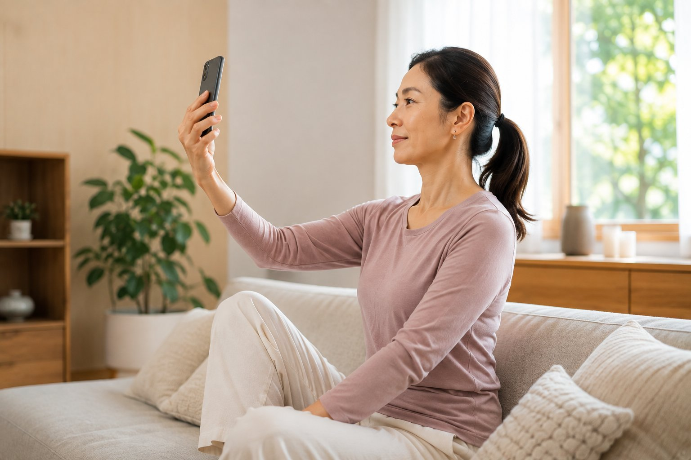
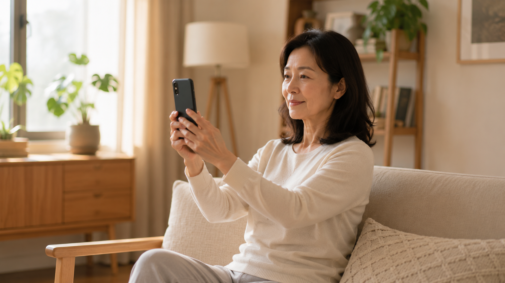

手機怎麼拿，脖子才不會受苦

- 頭部正常直立時重約 5 公斤，但低頭前傾 60 度時，力矩放大使頸椎承受高達 27 公斤等效重壓，相當於後頸整天掛著一名 7 歲小學生的重量。
- 深層病理機制：枕下肌群等長攣縮夾擠枕大神經，誘發後腦跳痛與眼眶脹痛（頸因性頭痛）；C7–T1 頸胸交界處因剪切力集中被動增厚，形成富貴包。
- 人體工學持機解法：利用「肘靠肋骨法」或「抱胸托肘架」將手機抬高至眼下 15 度以內，並落實「眼球轉動代替折頭頸」。
- 防護界線：若低頭出現手臂電擊痛、手指無力麻木或眩暈黑矇，為神經根壓迫或椎基底動脈危險紅旗，應立即就醫神經內外科。
你有沒有仔細算過，自己一天到底花多少時間低頭看手機？早晨通勤在捷運公車上、午休餐桌前、下午工位偷閒時、下班後窩在沙發裡，甚至是深夜關了燈躺在床上最後滑的那三十分鐘……你以為每次都只是看個兩三分鐘訊息，但累積起來，你的頸椎每天默默承受了四至六小時的高強度物理折磨。等到後腦勺開始隱隱作痛、脖子轉動有喀喀乾澀聲、摸到後頸下方鼓起一塊硬肉時，問題早已在不知不覺中深度硬化。要終結這種慢性傷害，關鍵不是戒掉手機，而是用精確的人體工學技巧改變你「拿手機的生物力學姿勢」。
頸椎力矩動力學：頭部前傾每增加 15 度，脖子承受了什麼？
在人體脊柱力學中，頭部與頸椎的關係如同懸臂樑（Cantilever Beam）與吊車力矩。知名脊椎外科醫師 Kenneth Hansraj 透過脊柱生物力學有限元素模型證實，低頭角度與頸椎關節承受的等效重力呈現驚人的幾何級數放大：
| 頭部低頭傾角 | 頸椎承受等效重力 | 力學等效比喻 | 深層肌群生理狀態 |
|---|---|---|---|
| 0°（正常直立中立位） | 約 4.5–5.5 公斤（10–12 磅） | 一顆成年人保齡球重 | 力量均勻由頸椎椎體與小面關節承載，肌肉處於低張力自然微動。 |
| 15°（輕微低頭看螢幕） | 約 12.2 公斤（27 磅） | 相當於掛著一整箱桶裝水 | 深層頸長肌與頭長肌開始離心拉長，上斜方肌被動張力微幅上升。 |
| 30°（一般專注滑手機） | 約 18.1 公斤（40 磅） | 相當於後頸背著兩顆大西瓜 | 提肩胛肌與夾肌缺血性痙攣，椎間盤髓核開始承受向後剪切力。 |
| 45°（坐姿放在大腿上滑） | 約 22.2 公斤（49 磅） | 相當於扛著一大袋建築水泥 | 枕下肌群強烈收縮夾擠神經，頸神經孔直徑受壓變窄約 20%。 |
| 60°（極度垂頭看手機） | 約 27.2 公斤（60 磅） | 相當於後頸掛著一名 7 歲小學生 | 頸部韌帶組織發生塑性變形（蠕變），棘突後側筋膜撕裂微水腫。 |
當你低下頭 60 度時，後頸肌肉必須爆發出近 30 公斤的反向拉力，才能阻止那顆 5 公斤的腦袋向前翻滾砸下。日復一日承擔這股巨大的機械剪切應力，後頸的肌腱韌帶怎能不鈣化發炎？
長期低頭的深層連鎖病理：頭痛、眼脹與富貴包從何而來？
長期低頭滑手機所引發的身體崩潰，並非局部單一肌肉的酸楚，而是一整條神經血管與力學鏈的連鎖反應：
- 枕下神經壓迫與頸因性頭痛（Cervicogenic Headache）：在頭顱後方、第一與第二頸椎（C1–C2）之間，分佈著細密強大的枕下肌群（Suboccipital Muscles）。長期低頭會讓這組肌肉處於極度縮短的強直狀態，直接夾擠穿行其中的枕大神經（Greater Occipital Nerve）與第三枕神經。神經受刺激後，痛覺訊號會沿著後腦杓如閃電般向上竄升，蔓延至頭頂兩側太陽穴，並透過三叉神經脊髓核的感覺神經共鳴，反射至雙眼眼眶深處，引發眼睛乾澀、視物模糊與跳動性脹痛。
- 頸胸交界代償性增厚——富貴包（Dowager's Hump）：第七頸椎與第一胸椎（C7–T1）是整條脊柱中「活動度最大的頸椎」與「剛性最穩的胸椎」交會處。當頭部長期前傾，這處交界轉折點承受了整條脊椎最大的前後向剪切力。大腦為了防止關節移位脫臼，會下達防禦指令：刺激當地的胸腰筋膜增生纖維結締組織與保護性脂肪墊以吸收震動，久而久之便隆起形成堅硬沉重的富貴包。
- 深層頸屈肌運動健忘症（Sensory Amnesia）：頸部前側深處的頸長肌（Longus Colli）與頭長肌，本應是維持頸椎前凸曲線的核心錨定肌。長期低頭使其完全喪失收縮張力，大腦的神經感知逐漸失能，導致抬起頭時只能依賴淺層粗壯的胸鎖乳突肌硬扯，形成越伸展脖子越粗短的惡性循環。

人體工學持機守則：不戒手機，也能讓頸椎減壓 80%
既然生活中不可能完全不用智慧型手機，我們就必須用省力、不疲勞的力學架構來替換原本的毀滅性低頭：
- 手肘肋骨閉鎖支撐法（Elbow-to-Rib Support）：單手拿手機時，切勿讓整隻手臂懸空在空氣中（那會讓你的三角肌與上斜方肌在兩分鐘內充血疲乏）。將拿手機那側的手肘微向內收，自然輕靠在自己同側的下肋骨或腹部側方，利用身體堅固的胸廓骨架作為天然立柱支撐手肘。
- 橫抱胸托肘平台架（Cross-Arm Forearm Shelf）：通勤站立或排隊等待時，非拿手機的手臂自然橫抱胸前（前臂平貼胸口下方），形成一個剛性的水平托架；隨後將持機側的手肘穩穩放在這座前臂平台上。如此一來，手機自然被墊高至胸骨高度，無需費力即可維持在視線下方 15 度以內。
- 利用隨身背包／抱枕墊高：在咖啡廳、沙發或捷運座位上，將隨身背包、手提包或靠枕直接放在大腿上，雙肘支撐在背包頂部操作手機。這能瞬間消除雙臂下墜的所有重力引力。
- 眼動代替折頭頸（Eye Tracking vs Neck Flexion）：將下巴水平微收（維持枕下肌群延展），轉移視線時，練習「眼球向下轉動 15–20 度」去瀏覽螢幕，而不是將整顆頭頸往前折疊垂下。
醫療急症紅旗：哪些肩頸症狀不可自行拿手機做放鬆？
若你的低頭肩頸痛已經演變為以下任何神經或血管受壓病徵，嚴禁自行大力扭轉脖子或進行民間推拿，應立即前往醫院尋求骨科或神經外科專科評估：
- 椎基底動脈供血不足（VBI 眩暈）：在抬頭或轉動頭頸瞬間突發天旋地轉的劇烈眩暈、單眼或雙眼眼前發黑（黑矇）、視物雙影複視或噁心嘔吐。
- 頸椎神經根性麻痛（Cervical Radiculopathy）：疼痛如電流般沿著肩膀一路放射至上臂外側、前臂或特定手指（如大拇指或無名指），伴隨虎口肌肉萎縮、握力衰退拿不穩手機。
- 頸椎脊髓壓迫症（Cervical Myelopathy）：雙手精細動作嚴重協調障礙（如扣襯衫鈕扣困難、使用筷子不聽使喚）、雙腳步態僵硬、走路漂浮有「踩在棉花堆上」的無力踏空感。
壁繩瑜伽如何重設頸椎神經空間感知？
日常調整持機姿勢能夠「切斷新的損傷來源」，但對於已經固化變形的後頸筋膜與沉睡的深層頸屈肌，身體需要一劑強效的主動神經重構：
- 自重懸掛頸胸卸載：在專業老師引導下，壁繩利用骨盆與胸腔的懸掛自重，提供 30%～70% 的減壓牽引，溫和逆轉 C5–T1 椎間盤後緣承受的累積擠壓，讓深層枕下肌群在完全卸重下深度釋放痙攣。
- 垂直水泥結構牆面反饋：學員後背與後腦輕觸垂直水泥結構牆，在剛性參考線下進行等長收下巴（Chin Tuck）練習，即時校準大腦的前庭平衡系統與本體感覺神經，重新喚醒沈睡的頸長肌。
- 胸椎後凸旋轉活動度重構：透過雙手抓繩展開胸骨的延伸動作，打通原本因低頭駝背而卡死的胸椎 T4–T8 活動度，讓頸椎不再孤軍奮戰代償胸椎的僵硬。
低頭到底讓你的頸椎退化了幾度？讓專業數據說話
AI 體態檢測會在教室現場透過高精準度 2D 骨骼力學演算，量化出你的頭部前傾公分數、耳垂與肩膀垂直軸線偏移角度，由老師當面解析頸胸代償鏈，為你制定安全的減壓練習路徑。
預約首次 NT$299 AI 體態檢測現在放下手機就能做：六十秒後頸神經重置術
讀完這段文字，請立刻將手機放下，跟著執行以下三步驟舒緩微動作：
- 垂直軸向牽引：背部坐直，頭部維持直立，將右手食指輕放在下巴前方。
- 水平向後微收：想像有一股平穩的力量水平推動下巴向後平移（不是向下低頭壓喉嚨，而是讓後腦勺像靠在牆壁上一樣向上拔高），感受後頸兩側深層肌群被溫和地軸向拉長。
- 橫膈膜慢吐氣：維持這個後頸微延展姿勢，鼻吸嘴吐，深長吐氣五秒鐘，重複三至五個呼吸循環，讓大腦重新校準「原來頭部中立位在這裡」的神經空間記憶。
本文為體態與姿勢的一般衛教與練習分享，非醫療診斷或治療。若有神經放射性麻痛、頸部外傷病史或脊椎滑脫，請務必先諮詢合格醫療專業人員。
常見問題
為什麼低頭滑手機時，頸椎承受的等效重量會暴增數倍？
在脊椎力矩槓桿原理下，成人頭部在直立零度時重量約四點五至五點五公斤；當低頭前傾十五度時，頸椎力矩放大承受約十二公斤；前傾三十度飆升至十八公斤；當低頭達六十度時，頸椎等效負載暴增至二十七公斤，相當於在後頸掛了一名七歲小學生的體重，迫使後側枕下肌群與上斜方肌持續劇烈等長痙攣。
長期低頭滑手機，為什麼容易誘發後腦勺跳痛與眼睛脹痛？
這是典型的「頸因性頭痛（Cervicogenic Headache）」。長期低頭使枕骨下方的枕下肌群（包含頭後大直肌與頭下斜肌）處於慢性缺血痙攣狀態，直接壓迫與夾擠穿行其中的枕大神經與第三枕神經，神經痛覺訊號會沿著頭皮放射至後枕部、頭頂兩側太陽穴，並透過三叉神經頸髓束核反射至眼眶深處引發脹痛。
站立或通勤時滑手機，有什麼符合人體工學的省力持機姿勢？
第一是「手肘肋骨支撐法」，將持機側的手肘微向內收，輕輕靠在自身側胸廓或肋骨下緣，利用軀幹骨骼分擔上肢重量；第二是「抱胸托肘平台法」，非持機側手臂橫抱胸前形成橫向剛性平台，穩固托住拿手機的手肘，輕鬆將手機抬高至視線水平下方十五度角以內；第三是「眼動代替頭動」，保持下巴微收，改以眼球自然向下轉動十五度閱讀，切斷低頭折頸習慣。
脖子後方因為常低頭鼓起一塊凸起，是脂肪堆積還是結構病變？
這通常是俗稱的「富貴包（頸胸交界處包塊）」。當第七頸椎與第一胸椎（C7–T1）長期處於前移剪切力下，該區域的棘上韌帶與胸腰筋膜為了保護神經不被拉斷，會代償性增生纖維結締組織與脂肪墊進行力學緩衝，同時伴隨深層頸伸肌慢性硬化。若不及時導正力線，容易進一步惡化為頸椎退化性關節炎。
壁繩瑜伽如何幫助低頭族重設頸胸椎本體感覺？
壁繩瑜伽利用懸掛繩索提供上半身自重卸載，在無重力垂直壓縮下進行胸椎被動伸展，打破長期駝背屈曲卡死的慣性；同時在結構牆面的剛性水平反作用力引導下，安全進行微牽引收下巴（Chin Tuck），重新激活被大腦遺忘的深層頸屈肌（頸長肌與頭長肌），從底層修復大腦對頭部中立位的神經空間定位。